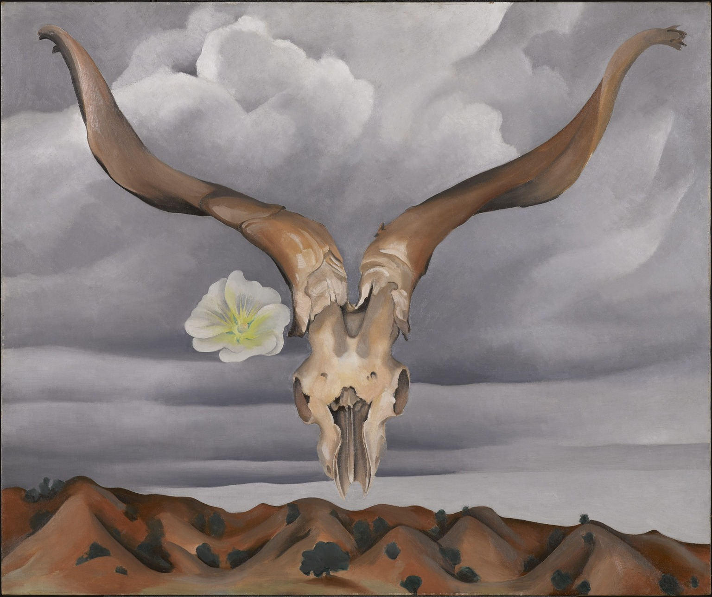

作品名 「羊の頭、白いタチアオイ、小さな丘」
花言葉 「大望」「野心」「豊かな実り」「気高く威厳に満ちた美」
タチアオイ
「大望」
タチアオイは、初夏から夏にかけて2m近く伸びる花茎に穂状の花が咲きます。丈夫な性質で、空き地や線路沿い、道路わきなどで見かけることも多い多年草です。「タチアオイ」は、蕾をたくさんつけることから、「大望」「豊かな実り」というポジティブな花言葉がつけられています。
羊の頭、白いタチアオイ、小さな丘
ジョージア・オキーフ
ヨハン・ローレンツ・イェンセンは花の絵に特化したデンマークのアーティスト。イェンセンの花は通常、通常トレイに、花瓶に立って花束のように配置された。暗い中間色の背景には、花の光色鮮やかな色調で色や種類が豊富です。
| 作品名 | 羊の頭、白いタチアオイ、小さな丘 |
| 作者 | ジョージア・オキーフ |
| 制作年 | 1935年 |
| 所蔵 | ブルックリン美術館 |